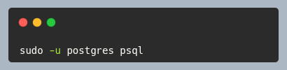
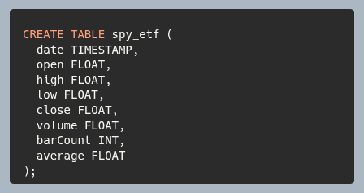
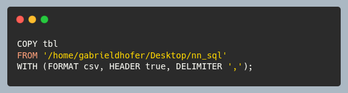
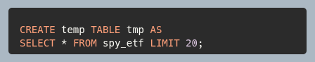
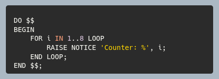
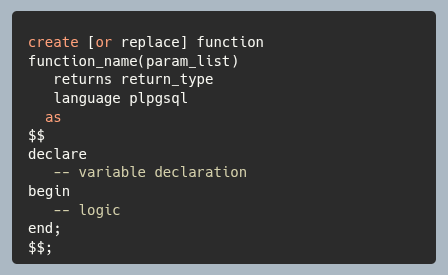

Spark Notes: Shuffle Configs
1. Partitioning & Parallelism
These settings dictate how many parallel tasks Spark creates and how data is sliced during processing.
| Configuration |
Default |
Recommendation / Description |
| spark.default.parallelism |
Total cores across cluster |
Default partition count for raw RDDs, join(), groupByKey(), etc. Set this to 2–4× total executor cores. |
| spark.sql.shuffle.partitions |
200 |
Controls default partition count during SQL/DataFrame shuffle operations (JOIN, GROUP BY). Increase for large datasets ($>100\text{ GB}$); decrease for small datasets ($<10\text{ GB}$). |
| spark.sql.files.maxPartitionBytes |
134217728 (128 MB) |
Maximum bytes to read into a single partition when reading file sources. Lowering this increases parallelism on input reads. |
| spark.sql.files.minPartitionNum |
Default parallelism |
Suggested minimum partition count when reading file sources. |
2. Shuffle Performance & Memory Management
Shuffling transfers data across nodes over the network. Optimizing these properties helps avoid disk spill, network bottlenecks, and OutOfMemoryError (OOM).
| Configuration |
Default |
Recommendation / Description |
| spark.shuffle.file.buffer |
32k |
In-memory buffer size for each shuffle output stream before writing to disk. Bump to 64k or 128k to reduce disk I/O on large cluster jobs. |
| spark.reducer.maxSizeInFlight |
48m |
Maximum size of shuffle data requested per reduce task simultaneously. Increase to 96m or 128m if network bandwidth is high. |
| spark.shuffle.compress |
true |
Compresses shuffle output files (uses LZ4 by default). Keeps network and disk usage lower. |
| spark.shuffle.spill.compress |
true |
Compresses data spilled to disk during shuffles. |
| spark.shuffle.service.enabled |
false |
Enables the External Shuffle Service. Crucial when using Dynamic Allocation so executors can be safely decommissioned while keeping shuffle files alive. |
3. Adaptive Query Execution (AQE)
Introduced in Spark 3, AQE dynamically optimizes shuffle partitions and joins at runtime based on actual stage metrics.
Spark Notes: coalesce vs. repartition
Use coalesce when:
- You are decreasing partitions: For example, after filtering a massive dataset down to a tiny fraction, you might have 1,000 partitions holding almost no data. Using coalesce(10) before writing to disk prevents creating thousands of tiny files.
- You want to save network I/O: When performance is a bottleneck and a perfect, uniform distribution of data isn't strictly necessary for the next step.
Use repartition when:
- You are increasing partitions: If you start with 2 partitions but have 16 cores available, coalesce(16) won't work (it cannot increase partitions). You must use repartition(16) to utilize all cores.
- You have severe data skew: If a few partitions are massive and holding up your job, repartition will evenly distribute the rows across the cluster.
- You want to partition by a specific column: If you frequently join or filter by a specific key (e.g., df.repartition($"department_id")), repartitioning by that key up front can speed up downstream operations.
| Feature |
coalesce |
repartition |
| Primary Use Case |
Decreasing the number of partitions efficiently. |
Increasing partitions, or fixing severe data skew. |
| Data Shuffling |
Minimal to none. Avoids a full network shuffle. |
Full shuffle (all-to-all data movement over the network). |
| Partition Size |
Can result in unequal partition sizes (data skew), as it just merges existing partitions. |
Results in roughly equal-sized partitions due to round-robin or hash partitioning. |
| Performance |
Much faster (low overhead). |
Slower (high I/O, CPU, and network overhead). |
| Downstream Parallelism |
Can cause "upstream" slowdowns because Spark tries to optimize and might run previous stages with fewer partitions. |
Acts as a resubmission/barrier. It isolates previous operations from downstream ones. |
Citations
[1] Google Gemini (Flash)
[2]
Table Generator
Apache Spark Certification Prep
Question 1
Which of the following components in an Apache Spark cluster is responsible
for creating the SparkSession, scheduling execution graphs, and coordinating
the distribution of tasks across executors? [1]
answer
drive node
The driver node
- runs the main() program, creates the SparkSession,
- translates user code into logicall/physical execution plans,
- and schedules tasks across workers
Question 2
Which of the following operations is categorized as a wide transformation,
requiring a shuffle of data across the network? [1]
answer
groupBy()
Grouping data requires aggregating records with identical keys across all
partitions, necessitating an expensive shuffle operation across the network.
Question 3
3. Consider the following PySpark code block:
df = spark.read.csv("data.csv")
df2 = df.filter("age > 21")
df3 = df2.select("name", "age")
How many Spark jobs are triggered by executing this code block? [1]
answer
0
Spark evaluates transformations lazily. Reading schema (unless explicitly
forces by format discovery), filtering, and selecting columns are all
transformations, so no actual computation job is triggered until an action is called.
[1] ".please generate a practice exam for the databricks certified associate developer
for apache spark - 10 questions long" Gemini, version (if known), Google, July 1, 2026,
https://gemini.google.com/app.
Implementing Gradient Descent with SQL (in progress)
While languages such as Python is a popular choice for implementing and training ML models,
we attempt to implement gradient descent in SQL (postgresql), because it could be fun an interesting.
How to install and start the postgres CLI:

Create table and specify the primary key - necessary:

Load data into the main table:

Select last 20 records from the table and insert into temp table:

How to Loop in postgreSQL:

Defining a UDF in postgreSQL for the model function:
https://neon.com/postgresql/plpgsql/create-function#introduction-to-create-function-statement

A Backtesting System with Apache Spark
- Architecture
- Usage
- Main
- Init
- Benchmark
- Sampling
- Backtest
1. Architecture Overview
1. The main program calls benchmark.
2. The benchmark function creates backtest "batches".
3. The backtest function selects a random slice from the historical data.
4. Then backtest calls a strategy method to compute when the user should BUY/SELL.
5. Finally, backtest calculates returns and excess returns based on those BUYs/SELLs.
2. Command Line Parameters & Usage
Here's a great online guide to SBT:
SBT Book
2.1 Parameters
- BatchCount: number of samples
- BatchSize: length of sample slice

2.2 Compiling and running

3. Main
Entry point for the program. It does the following things:
- parses command line arguments
- creates the
SparkSession
- loads data into main
Code

4. Init
- Create
SparkSession and load data from file.
- Load the DDL (schema) from file and store as a string.
- The Spark Window object allows us to add a row number column to the dataframe.
- The OHLC data is loaded by also passing the DDL as the
schema option.
Code

5. Benchmark
This function simply repeats a call to
backtest.
batchCount is the number of times that
backtest will get invoked.
Code

6. Sampling
This randomly samples a slice of price data from the entire file.
The random seed is set with the time in nanoseconds.
Code

7. Backtest
Calls the strategy on the sample data. Then calculates returns.
Here are the common table expression steps in calcReturns:
-
expr0 ⟶
Adds prevOrderAction.
Only return records where orderAction changes from previous record
-
expr1⟶
Adds closeLag
-
expr2⟶
Adds row_num2 and closeRtn.
Resets row numbers since we filtered in expr0
orderAction must be false - because returns are calculated when positions are closed.
-
expr3⟶
Adds excessRtn
-
select expression
Code

8. TTM Squeeze Indicator Strategy
-
movingAvg⟶ calculated with AVG window function
-
stddev⟶ calculated with STDDEV_POP window function
-
bollinger⟶ calculates both upper and lower bands based on moving average and stddev
-
atr⟶ average true range - greatest value among these:
- high - low
- abs(high - previous close)
- abs(low - previous close)
keltner⟶ upper and lower bands:
- midline = avg(close)
- upper = midline + mult*atr
- lower = midline - mult*atr
barValue⟶ donchainsqueeze⟶ when bollinger is between keltner channelsorderAction
Code

9. Sharpe & Calmar
- https://en.wikipedia.org/wiki/Sharpe_ratio
- https://en.wikipedia.org/wiki/Calmar_ratio
Future Project: Building a Database
Author: Gabriel Hofer
Date: 2026-04-10
Goals:
- To have fun learning about databases
- To understand databases internals
- To implement clustered indexes with B+ trees and possible other structures
- Implementation should read and write data files and index files.
- To understand and implement query planning
- To understand and implement Atomicity, Consistency, Isolation, Durability
- Implement logical sharding (since we are developing on a single machine)
- Implement Locking:
a. row-level, page-level, table-level
b. s-lock, x-lock, u-lock
Coding Standards:
- Implementation should be in Scala 3, built with SBT
- Only Immutable types: Vector, List, Set, Map, Range
- No for loops, only folds, reduce, and other strictly functional constructs
- The data should always exist in a tree (B+), with a unique key
More Goals:
- Implement method to print the B+ tree, formatted
- Understand how index framentation happens and how to remediate it
- Explore B+ tree alternatives
- Create a "service" - to connect to the database via JDBC
- Understand how column order in the index affects performance
- Learn about covering an index in a query and why it matters
- Database pages: page-id, heap files, tree files, page headers, page layout schemes,
- Think about how to add concurrency features with Scala actors
Online Resources: